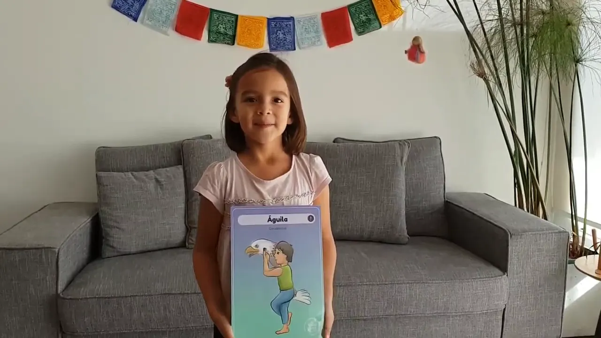

En este nuevo video, Luz les comparte la Postura del Águila 🦅 o Garudasana, que es una postura de mucho equilibrio y fuerza.
.
Sin embargo, (como ella bien lo dice 🥰 ) cada uno puede inventar una propia, pues la idea es que puedan pasar un lindo momento en estos tiempos difíciles.
.
Los beneficios de realizar esta postura son muchos, algunos de ellos:
✔ Fortalece y estira los tobillos y las pantorrillas
✔ Estira los muslos, las caderas, los hombros y parte superior de la espalda
✔ Mejora la concentración
✔ Mejora el sentido del equilibrio
.
Espero que la disfruten junto a sus niños y niñas y sobretodo pasen un hermoso momento juntos.
.
Y si les gusta, ayúdenos con un Like👍para que much@s más puedan acceder a verlo.
.
Con cariño,
Luz y Carmen 💜💫🙏